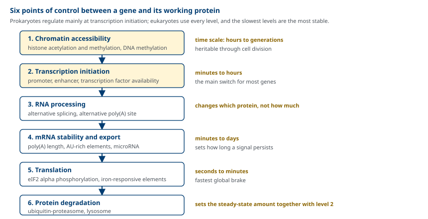
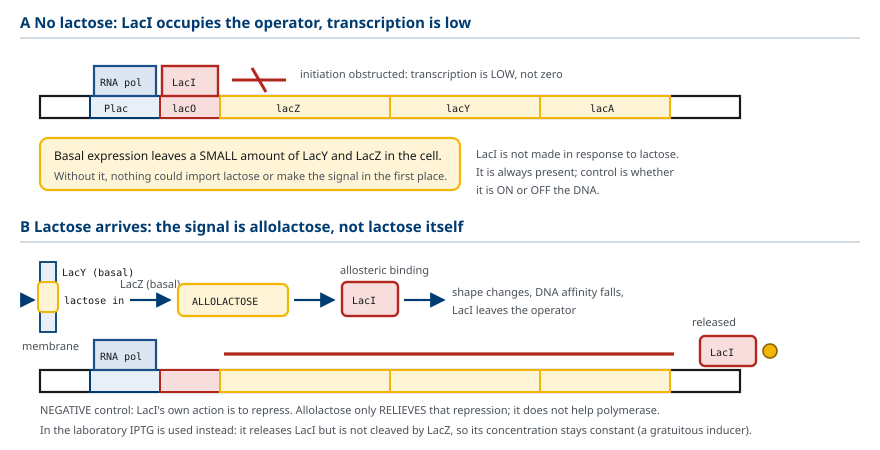
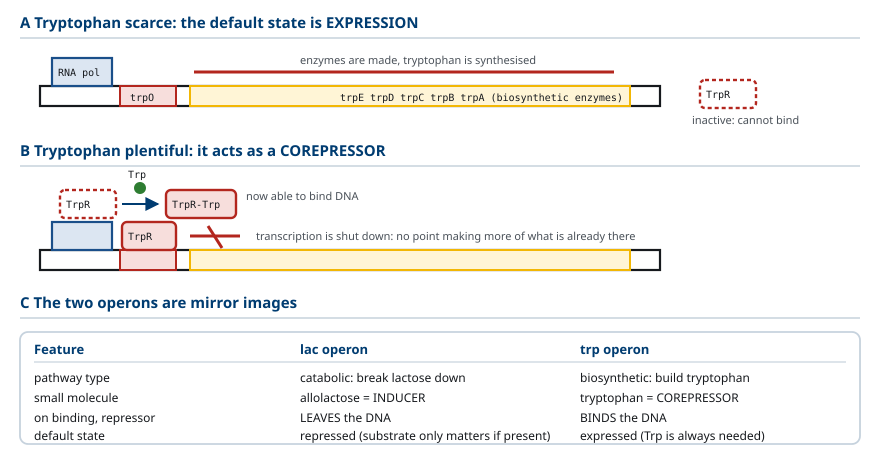
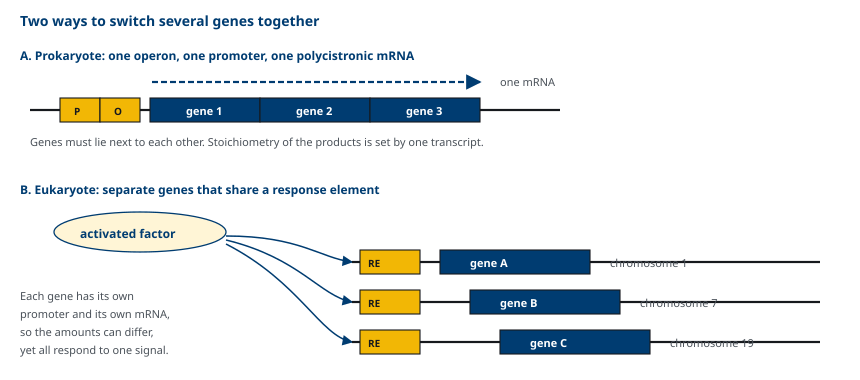
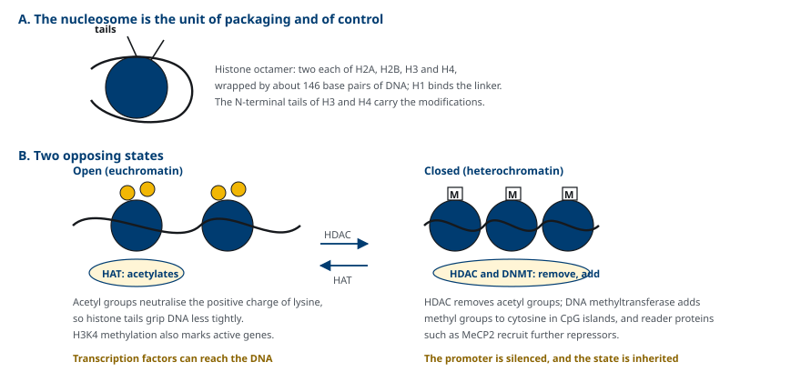
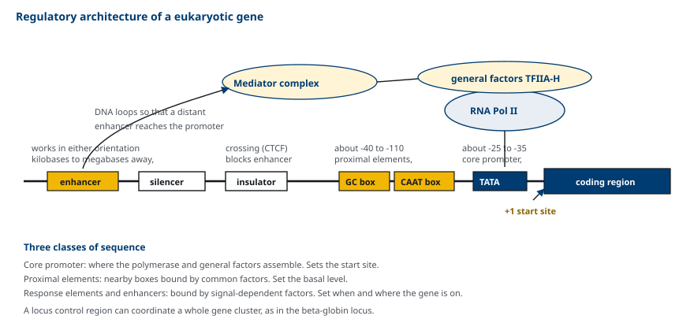

M03-W04-L02 · 분자유전학과 계통별 의학생화학특론
유전자 발현 조절의 원리와 조절 단위
Principles of Gene Expression Control and the Units of Regulation
학습목표
- 유전자 발현 조절이 필요한 이유를 구성 발현 유전자와 조절 발현 유전자의 구분으로 설명한다.
- Operon의 구성 요소를 적고 lac operon의 음성 조절과 양성 조절을 네 가지 영양 조건에서 설명한다.
- Trp operon의 억제와 attenuation을 구분하고 두 기전이 함께 작동하는 이유를 설명한다.
- 진핵세포의 유전자 발현 조절이 원핵세포와 다른 점을 다섯 가지 이상 든다.
- Chromatin 수준, 전사 수준, 전사 후 수준의 조절을 작동 속도와 지속성으로 비교한다.
- Core promoter, 근위 조절 요소, 반응 요소와 enhancer의 역할을 구분한다.
- 유도와 억제의 개념을 약물 대사 효소의 유도와 임상적 약물 상호작용으로 설명한다.
선수지식
- M03-W03-L01 Splicing 이상과 질환 — 대체 splicing, mRNA 안정성, microRNA
- M03-W03-L03 Ribosome과 번역의 단계 — eIF2α 인산화에 의한 개시 조절
- M03-W04-L01 번역 후 수정과 단백질 분해 — histone 수정, ubiquitin-proteasome 경로
강의 구성
- 1. 유전자 발현 조절의 필요와 두 종류의 유전자
- 2. 원핵세포의 조절 단위 — operon과 lac operon
- 3. Trp operon — 억제와 attenuation
- 4. 진핵세포 조절이 원핵세포와 다른 점
- 5. Chromatin 수준의 조절
- 6. 전사 수준의 조절 — promoter와 조절 서열의 구성
- 7. 전사 후·번역 수준의 조절
- 8. 유도와 억제의 임상 — 약물 대사와 발현 조절의 질환
1. 유전자 발현 조절의 필요와 두 종류의 유전자
사람의 모든 체세포는 같은 유전체를 가지고 있다. 그런데 간세포와 신경세포, 적혈구 전구세포는 전혀 다른 단백질 집합을 만든다. 또 같은 세포라도 영양 상태, 호르몬, 스트레스에 따라 만드는 단백질이 달라진다. 같은 정보에서 서로 다른 결과가 나오는 이유가 유전자 발현 조절이다.
유전자는 조절의 성격에 따라 두 부류로 나뉜다.
- 구성 발현(constitutive) 유전자: 항상 일정하게 발현된다. ribosome 단백질, glycolysis 효소 일부, cytoskeleton 단백질처럼 모든 세포가 늘 필요로 하는 산물이다. housekeeping 유전자라고도 한다.
- 조절 발현(regulated) 유전자: 필요할 때만, 필요한 세포에서만 발현된다. 조절의 방향에 따라 두 용어를 쓴다.
- 유도(induction): 신호에 의해 발현이 늘어난다.
- 억제(repression): 신호에 의해 발현이 줄어든다.
조절의 생물학적 의미는 경제성과 적응이다. 쓰이지 않는 단백질을 만드는 데는 아미노산과 ATP가 든다. 앞 수업에서 계산한 대로 아미노산 하나를 붙이는 데 고에너지 결합 4개가 소비되므로, 필요 없는 단백질의 합성을 끄는 것만으로도 큰 절약이 된다.

조절이 가능한 지점은 여러 곳에 있고, 각 지점의 성질이 다르다. 전사 개시는 가장 경제적인 조절 지점이다. 아무것도 만들지 않은 상태에서 끄기 때문이다. 반대로 번역 수준과 단백질 분해 수준의 조절은 가장 빠르다. 이미 만들어진 mRNA나 단백질에 작용하기 때문이다. 세포는 이 지점들을 조합해 쓴다.
2. 원핵세포의 조절 단위 — operon과 lac operon
세균은 환경 변화에 빠르게 적응해야 하므로 전사 개시 수준의 조절에 집중한다. 그 조절 단위가 operon이다.
Operon은 기능적으로 관련된 여러 유전자가 하나의 promoter 아래 묶여 함께 전사되는 단위다. 결과로 만들어지는 mRNA는 여러 단백질을 담은 polycistronic mRNA다. 구성 요소는 다음과 같다.
- 구조 유전자: 실제 효소를 암호화한다.
- Promoter(P): RNA polymerase가 결합한다.
- Operator(O): 조절 단백질이 결합하는 짧은 서열이다.
- 조절 유전자: operon 밖에 있고 조절 단백질(억제자 또는 활성자)을 암호화한다.
Lac operon은 lactose를 쓰는 데 필요한 세 효소를 담고 있다. *lacZ*는 β-galactosidase(lactose를 glucose와 galactose로 분해), *lacY*는 permease(lactose를 세포 안으로 들임), *lacA*는 transacetylase를 암호화한다.
조절은 두 가지가 겹쳐 작동한다.
(1) 음성 조절 — 억제자와 유도물질 lacI 유전자가 만드는 억제자는 평소 operator에 결합해 전사를 막는다. Lactose가 있으면 β-galactosidase가 그 일부를 allolactose로 바꾸고, allolactose가 억제자에 결합하면 억제자의 구조가 바뀌어 operator에서 떨어진다. 그래서 allolactose가 유도물질(inducer)이다. 실험에서는 분해되지 않는 유사체 IPTG를 쓴다.
(2) 양성 조절 — cAMP와 CAP 억제자가 떨어졌다고 전사가 왕성해지는 것은 아니다. Lac promoter는 본래 약해서 CAP(catabolite activator protein)가 붙어야 RNA polymerase를 효율적으로 모은다. CAP는 cAMP와 결합할 때만 DNA에 붙고, cAMP 농도는 glucose가 적을 때 높아진다.

| Lactose | Glucose | 억제자 | cAMP-CAP | 전사 |
|---|---|---|---|---|
| 없음 | 없음 | operator에 결합 | 결합 | 꺼짐 |
| 있음 | 없음 | 떨어짐 | 결합 | 최대 |
| 있음 | 있음 | 떨어짐 | 결합하지 못함 | 매우 낮음 |
| 없음 | 있음 | operator에 결합 | 결합하지 못함 | 꺼짐 |
이 표의 의미는 세균이 glucose를 먼저 쓰고 glucose가 없을 때만 lactose로 돌아선다는 것이다. 음성 조절은 "lactose가 있는가"를, 양성 조절은 "더 좋은 연료가 없는가"를 묻는다. 두 질문에 모두 "예"라고 답할 때만 효소가 대량으로 만들어진다.
3. Trp operon — 억제와 attenuation
Lac operon은 분해 경로(catabolic)의 operon이고 기질이 있을 때 켜진다. Trp operon은 합성 경로(anabolic)의 operon이고 산물이 있을 때 꺼진다. 조절의 방향이 반대다.
Trp operon은 tryptophan 생합성에 필요한 다섯 유전자(trpE, trpD, trpC, trpB, trpA)를 담고 있다.
(1) 억제 — tryptophan이 보조억제자 억제자 단백질은 혼자서는 operator에 결합하지 못한다. Tryptophan이 억제자에 결합하면 구조가 바뀌어 operator에 붙어 전사를 막는다. 이때 tryptophan을 보조억제자(corepressor)라 한다. Lac operon의 유도물질과 정확히 반대 역할이다.
(2) Attenuation — 번역이 전사를 멈춘다 Trp operon에는 구조 유전자 앞에 leader 서열이 있고, 이 서열은 짧은 leader peptide를 암호화한다. leader peptide 안에 tryptophan 코돈 두 개가 연달아 있다는 점이 핵심이다.
- Tryptophan이 부족하면 Trp-tRNA가 모자라 ribosome이 그 두 코돈에서 멈춘다. 멈춘 ribosome이 RNA의 특정 부위를 가려서, 전사 종결 구조(terminator hairpin)가 아니라 종결을 막는 구조(antiterminator)가 형성된다. RNA polymerase가 계속 나아가 다섯 유전자가 전사된다.
- Tryptophan이 충분하면 ribosome이 멈추지 않고 지나가며, terminator hairpin이 형성되어 전사가 leader 안에서 끝난다.

Attenuation이 가능한 전제는 원핵세포에서 전사와 번역이 결합되어 있다는 사실이다. 전사가 끝나기 전에 ribosome이 같은 RNA에 올라타므로 번역의 진행 상황이 전사에 되먹임될 수 있다. 진핵세포는 전사가 핵에서, 번역이 세포질에서 일어나므로 이 기전이 성립하지 않는다.
두 기전이 겹치기 때문에 조절 폭이 넓어진다. 억제는 있다/없다를 거칠게 정하고, attenuation은 tryptophan 농도에 따라 세밀하게 조정한다.
4. 진핵세포 조절이 원핵세포와 다른 점
진핵세포의 조절은 원핵세포의 틀을 그대로 쓸 수 없다. 차이를 정리하면 다음과 같다.
| 항목 | 원핵세포 | 진핵세포 |
|---|---|---|
| 조절 단위 | operon, polycistronic | 유전자 하나씩, monocistronic |
| DNA의 상태 | 비교적 자유로운 상태 | nucleosome에 감겨 있음 |
| 전사와 번역 | 같은 구획, 결합되어 있음 | 핵과 세포질로 분리 |
| 조절 서열의 위치 | promoter 근처 | 근위 요소 + 수 kb~Mb 떨어진 enhancer |
| 조절 단백질의 수 | operon당 소수 | 하나의 promoter에 수십 종 |
| 주요 조절 수준 | 전사 개시 | 전사 개시 + chromatin + 전사 후 + 번역 + 분해 |
| 여러 유전자의 동시 조절 | 한 operon에 묶는다 | 공통 반응 요소를 공유한다 |
마지막 항목이 특히 중요하다. 진핵세포에는 operon이 없는데도 여러 유전자를 함께 켤 수 있다. 서로 다른 염색체에 있는 유전자들이 같은 반응 요소를 가지고 있으면 하나의 전사인자가 모두를 동시에 조절한다. 예를 들어 glucocorticoid가 작용하면 glucocorticoid response element를 가진 여러 유전자가 함께 유도된다.

진핵세포에는 또 다른 조절 방식도 있다.
- 유전자 증폭: 특정 유전자의 복제수가 늘어난다. 종양에서 *ERBB2*나 MYCN 증폭이 그 예이고, 약물 저항성의 기전이 되기도 한다.
- DNA 재배열: 면역글로불린과 T세포 수용체 유전자의 V(D)J 재조합이 대표적이다. 유전체 서열 자체를 바꾸는 조절이다.
- Imprinting과 X 염색체 불활성화: 같은 서열이라도 부모 중 누구에게서 왔는지, 또는 어느 쪽 X인지에 따라 발현이 달라진다.
5. Chromatin 수준의 조절
진핵세포의 DNA는 nucleosome에 감겨 있다. Nucleosome은 histone 팔량체(H2A, H2B, H3, H4가 각각 두 개)에 DNA 약 146 염기쌍이 감긴 구조이고, H1이 연결부에 결합한다. 전사인자가 DNA에 접근하려면 이 포장이 느슨해져야 하므로, chromatin의 상태가 모든 전사 조절의 전제 조건이 된다.
Histone 수정 Histone의 N 말단 꼬리가 수정의 자리다.
- Acetylation: histone acetyltransferase(HAT)가 lysine의 양전하를 중화해 DNA와의 결합을 느슨하게 만든다. 전사가 쉬워진다. Histone deacetylase(HDAC)가 제거하면 다시 조밀해진다.
- Methylation: 위치에 따라 뜻이 다르다. H3의 4번 lysine methylation은 활성 유전자를, 9번과 27번 lysine methylation은 억제된 영역을 표시한다.
DNA methylation DNA methyltransferase가 CpG 서열의 cytosine에 methyl기를 붙인다. Promoter 영역의 CpG island가 methylation되면 유전자가 꺼진다. MeCP2 같은 판독 단백질이 methyl 표지를 읽고 HDAC 복합체를 불러들이므로, 두 체계가 연결되어 있다.

이 수준의 조절은 세포 분열을 거쳐 유지된다는 점이 다른 수준과 결정적으로 다르다. 그래서 세포의 정체성(간세포는 계속 간세포로 남는다)을 유지하는 데 쓰이고, 동시에 한번 잘못 설정되면 되돌리기 어렵다.
6. 전사 수준의 조절 — promoter와 조절 서열의 구성
진핵세포 유전자의 조절 서열은 역할에 따라 세 층으로 구분된다.
(1) Core promoter 전사 개시점(+1) 바로 앞에 있다. 대표적인 요소가 TATA box(약 -25~-35)이고, TATA box가 없는 유전자는 다른 요소(initiator, GC-rich 영역)를 쓴다. TATA box에 TBP를 포함한 TFIID가 결합하고, 이어서 일반 전사인자(TFIIA, B, E, F, H)와 RNA polymerase II가 모여 개시 복합체를 만든다. Core promoter는 전사가 어디서 시작할지를 정하지만, 언제 얼마나 전사될지는 정하지 않는다.
(2) 근위 조절 요소 개시점에서 약 -40~-110에 있다. CAAT box와 GC box가 대표적이고 여러 세포에 널리 있는 전사인자가 결합해 기본 발현 수준을 정한다.
(3) 반응 요소와 enhancer 신호에 따라 작동하는 서열이다. Enhancer는 위치와 방향에 비교적 자유롭다. 유전자의 상류, 하류, intron 내부에 있을 수 있고 수십 kb에서 Mb 떨어진 곳에서도 작동한다. DNA가 고리를 이루어 enhancer가 promoter에 가까이 오기 때문이다. 반대 역할을 하는 서열이 silencer이고, enhancer의 영향이 엉뚱한 유전자로 넘어가지 않게 경계를 만드는 서열이 insulator다.

대표적인 반응 요소를 정리하면 신호와 유전자군의 대응이 보인다.
| 반응 요소 | 신호 | 결합 인자 | 유도되는 유전자의 예 |
|---|---|---|---|
| CRE (cAMP response element) | cAMP 증가 | CREB | PCK1(PEPCK), somatostatin |
| GRE (glucocorticoid response element) | cortisol | Glucocorticoid receptor | PCK1, TAT, 항염증 유전자 |
| SRE (sterol regulatory element) | 세포 내 sterol 감소 | SREBP | HMGCR, LDLR |
| HSE (heat shock element) | 열·단백질 스트레스 | HSF1 | Chaperone 유전자 |
| HIF 반응 요소 | 저산소 | HIF-1α/β | EPO, VEGFA, glycolysis 효소 |
한 유전자의 promoter 영역에는 보통 여러 반응 요소가 함께 있다. 그래서 발현량은 여러 신호의 합산 결과가 된다. *PCK1*이 cAMP(공복)와 glucocorticoid(스트레스)에 함께 반응하고 insulin에 억제되는 것이 그 예다.
7. 전사 후·번역 수준의 조절
전사가 끝난 뒤에도 조절 지점이 여러 곳 남아 있다. 앞 수업들에서 다룬 내용이 여기서 하나의 틀로 모인다.
- 대체 splicing: 전사량이 아니라 어떤 단백질이 만들어지는지를 바꾼다. 조직마다 SR protein과 hnRNP의 농도가 달라 결과가 달라진다.
- 대체 poly(A) 부위 사용: 3' UTR의 길이를 바꾸어 mRNA에 들어가는 조절 서열(AU-rich element, microRNA 표적 부위)의 수를 바꾼다.
- mRNA 안정성: AU-rich element에 결합하는 단백질, poly(A) 길이, microRNA가 반감기를 정한다. 같은 전사량에서도 정상 상태의 mRNA 양이 수십 배 달라질 수 있다.
- 번역 개시: eIF2α 인산화는 거의 모든 mRNA의 번역을 함께 줄인다. 특정 mRNA만 조절하는 장치도 있다. 철 대사가 그 예다.
- 단백질 분해: ubiquitin-proteasome 경로가 조절 단백질의 수명을 정한다. 전사인자 자체가 이 경로로 분해되므로, 분해 조절이 곧 전사 조절이 된다.
철 대사의 조절은 같은 결합 단백질이 위치에 따라 반대 결과를 내는 예로 기억할 만하다. Iron-responsive element(IRE)와 IRE 결합 단백(IRP)의 작용이다.
| mRNA | IRE의 위치 | 철이 부족할 때 IRP가 결합하면 | 결과 |
|---|---|---|---|
| Ferritin | 5' UTR | ribosome의 진입을 막는다 | 저장 단백질 합성 감소 |
| Transferrin receptor | 3' UTR | 분해를 막아 mRNA를 안정화한다 | 수용체 증가, 철 흡수 증가 |
철이 부족하면 저장을 줄이고 흡수를 늘린다는 하나의 목표가, 같은 단백질이 서로 다른 위치의 같은 서열에 결합하는 방식으로 달성된다.
8. 유도와 억제의 임상 — 약물 대사와 발현 조절의 질환
유도의 개념이 임상에서 가장 자주 쓰이는 곳은 약물 대사다. 여러 약물이 핵수용체를 통해 자신을 대사하는 효소의 전사를 늘린다.
| 유도 물질 | 매개 수용체 | 유도되는 효소 | 임상 결과 |
|---|---|---|---|
| Rifampin, phenytoin, carbamazepine, St. John's wort | PXR, CAR | CYP3A4 등 | 함께 쓰는 약물의 농도가 떨어진다 |
| 흡연(다환 방향족 탄화수소) | AhR | CYP1A2 | Theophylline, clozapine 농도 감소 |
| 만성 음주 | — | CYP2E1 | Acetaminophen의 독성 대사물 증가 |
유도는 전사 수준의 변화이므로 효과가 나타나고 사라지는 데 며칠에서 2주가 걸린다. 이 시간차가 임상에서 중요하다. Rifampin을 시작하면 warfarin 용량을 올려야 하고, rifampin을 중단하면 유도가 풀리면서 warfarin 효과가 과도해질 수 있다. 반면 효소 억제는 경쟁적 결합이므로 수 시간 내에 나타난다. 유도와 억제의 시간 척도가 다른 이유가 조절 수준의 차이에 있다.
유전자 발현 조절 자체의 이상도 질환을 만든다.
- 조절 서열의 변이: 서열이 아니라 조절 부위가 바뀐다. HBB promoter의 변이는 β⁺-thalassemia를 만들고, 유전성 지속성 태아 hemoglobin에서는 HBG 조절 영역의 변이로 태아형 hemoglobin이 성인기까지 유지된다.
- Enhancer의 재배치: Burkitt lymphoma에서 t(8;14) 전위는 *MYC*을 immunoglobulin 중쇄 유전자좌의 강한 enhancer 옆으로 옮긴다. 단백질은 정상인데 발현량과 발현 시점이 어긋나 종양이 된다.
- Imprinting과 methylation 이상: Prader-Willi, Angelman, Beckwith-Wiedemann 증후군이 그 예다.
확인 문항
Lac operon에서 lactose와 glucose가 모두 있을 때 전사량이 매우 낮은 이유를 두 조절 기전으로 설명하라.
해설
두 조절이 독립적으로 작동하기 때문이다. Lactose가 있으므로 그 대사물인 allolactose가 억제자에 결합해 억제자는 operator에서 떨어진다. 즉 음성 조절은 해제된다. 그러나 glucose가 있으면 세포 내 cAMP 농도가 낮아 CAP가 cAMP와 결합하지 못하고 DNA에 붙지 못한다. Lac promoter는 본래 약하므로 CAP의 도움 없이는 RNA polymerase를 효율적으로 모으지 못해 전사량이 매우 낮게 유지된다. 결과적으로 세균은 더 좋은 연료인 glucose를 먼저 소비한다.
Lac operon의 유도물질과 trp operon의 보조억제자는 모두 작은 분자이고 모두 억제자에 결합한다. 결과가 반대인 이유는 무엇인가.
해설
억제자가 operator에 결합하는 조건이 반대로 설정되어 있기 때문이다. Lac 억제자는 기본 상태에서 operator에 결합해 있고, allolactose가 결합하면 구조가 바뀌어 떨어진다. 따라서 기질이 있을 때 켜지는 분해 경로에 맞는다. Trp 억제자는 기본 상태에서 operator에 결합하지 못하고, tryptophan이 결합할 때만 결합할 수 있는 구조가 된다. 따라서 산물이 있을 때 꺼지는 합성 경로에 맞는다. 같은 구조 변화 원리가 경로의 방향에 따라 반대로 쓰인 것이다.
Attenuation은 진핵세포에서 일어나지 않는다. 그 구조적 이유를 설명하라.
해설
Attenuation은 leader 서열을 번역하는 ribosome의 위치가 아직 전사 중인 같은 RNA의 2차 구조를 결정함으로써 작동한다. 즉 전사와 번역이 같은 분자 위에서 동시에, 같은 구획에서 일어나야 한다. 원핵세포는 핵막이 없어 전사와 번역이 결합되어 있으므로 이 조건이 만족된다. 진핵세포는 전사가 핵에서, 번역이 세포질에서 일어나고 그 사이에 capping, splicing, 수출 과정이 끼어 있으므로 번역 상황이 전사 종결에 되먹임될 수 없다.
진핵세포에는 operon이 없는데도 여러 유전자를 동시에 켤 수 있다. 그 기전을 설명하고, operon 방식과 비교해 어떤 이점이 있는지 적으라.
해설
서로 다른 염색체에 흩어져 있는 유전자들이 같은 반응 요소를 공유하고, 하나의 활성화된 전사인자가 그 반응 요소들에 모두 결합함으로써 동시에 조절된다. Glucocorticoid response element를 가진 유전자들이 cortisol에 함께 반응하는 것이 그 예다. 이점은 두 가지다. 첫째, 유전자가 물리적으로 인접할 필요가 없으므로 한 유전자가 여러 신호 체계에 동시에 속할 수 있다. 둘째, 각 유전자가 자신의 promoter와 자신의 mRNA를 가지므로 유도의 정도를 유전자마다 다르게 할 수 있다. Operon은 하나의 전사체로 묶이므로 산물의 비율을 따로 조정하기 어렵다.
Chromatin 수준의 조절이 다른 조절 수준과 결정적으로 다른 점은 무엇이고, 그 성질이 임상에서 어떤 의미를 가지는가.
해설
Histone 수정과 DNA methylation의 상태는 세포 분열을 거쳐 딸세포로 전달된다. 따라서 chromatin 수준의 조절은 한번 설정되면 오래 유지되고 세포의 정체성을 지키는 데 쓰인다. 임상적 의미는 두 방향이다. 잘못 설정된 상태도 그대로 유지되므로, 종양에서 promoter CpG island의 과다 methylation으로 꺼진 종양억제 유전자는 변이가 없어도 기능을 하지 못한다. 반대로 서열이 온전하므로 methylation이나 acetylation을 되돌리면 발현을 회복시킬 수 있다. DNA methyltransferase 억제제와 HDAC 억제제가 치료에 쓰이는 근거다.
어떤 유전자의 core promoter는 정상인데 멀리 떨어진 enhancer 영역에 변이가 생겼다. 단백질 서열은 정상인데도 질환이 생길 수 있는 이유를 설명하라.
해설
Core promoter는 전사가 어디서 시작하는지를 정하지만 언제 어느 세포에서 얼마나 전사될지는 enhancer와 반응 요소가 정한다. 따라서 enhancer의 변이는 단백질 서열을 바꾸지 않고도 발현량, 발현 시기, 발현 조직을 바꾼다. 결과적으로 필요한 시점에 단백질이 모자라거나, 반대로 꺼져 있어야 할 세포에서 과다 발현된다. Burkitt lymphoma의 t(8;14) 전위가 *MYC*을 immunoglobulin 유전자좌의 강한 enhancer 옆에 옮겨 놓아 종양을 만드는 것이 후자의 예다.
철이 부족할 때 ferritin 합성은 줄고 transferrin receptor는 늘어난다. 같은 결합 단백질이 반대 결과를 내는 기전을 설명하라.
해설
두 mRNA가 모두 iron-responsive element(IRE)를 가지지만 위치가 다르다. Ferritin mRNA의 IRE는 5' UTR에 있어 IRE 결합 단백(IRP)이 붙으면 ribosome의 진입을 막아 번역이 억제된다. Transferrin receptor mRNA의 IRE는 3' UTR에 있어 IRP가 붙으면 분해 효소의 접근을 막아 mRNA가 안정화되고 수용체 합성이 늘어난다. IRP는 철이 부족할 때 IRE에 결합하므로, 하나의 신호가 저장은 줄이고 흡수는 늘리는 일관된 결과를 만든다. 조절 서열의 기능이 서열 자체만이 아니라 mRNA 안에서의 위치로 결정되는 예다.
결핵 치료로 rifampin을 시작한 환자에서 warfarin의 효과가 떨어졌다. 이후 rifampin을 중단할 때 주의할 점과 그 이유를 설명하라.
해설
Rifampin은 핵수용체 PXR을 통해 CYP3A4 등 약물 대사 효소의 전사를 유도해 warfarin의 대사를 촉진한다. 전사 수준의 변화이므로 효과가 나타나는 데 며칠에서 2주가 걸리고, 같은 이유로 중단 후 효소량이 원래대로 돌아오는 데도 비슷한 시간이 걸린다. Rifampin 투여 중 올려 놓은 warfarin 용량을 중단 직후 그대로 유지하면, 유도가 서서히 풀리면서 warfarin 농도가 올라가 과도한 항응고와 출혈 위험이 생긴다. 따라서 중단 시점부터 응고 검사를 자주 하면서 용량을 단계적으로 줄여야 한다. 효소 유도와 효소 억제의 시간 척도가 다르다는 점이 판단의 근거다.
참고문헌
- Ferrier DR (ed). Lippincott Illustrated Reviews: Biochemistry. Chapter 33, Regulation of Gene Expression.
- Jacob F, Monod J. Genetic regulatory mechanisms in the synthesis of proteins. J Mol Biol 1961;3:318–356.
- Yanofsky C. Attenuation in the control of expression of bacterial operons. Nature 1981;289:751–758.
- Allis CD, Jenuwein T. The molecular hallmarks of epigenetic control. Nat Rev Genet 2016;17:487–500.
- Lee TI, Young RA. Transcriptional regulation and its misregulation in disease. Cell 2013;152:1237–1251.
- Lin JH, Lu AYH. Inhibition and induction of cytochrome P450 and the clinical implications. Clin Pharmacokinet 1998;35:361–390.
- Frangoul H et al. CRISPR-Cas9 gene editing for sickle cell disease and β-thalassemia. N Engl J Med 2021;384:252–260.